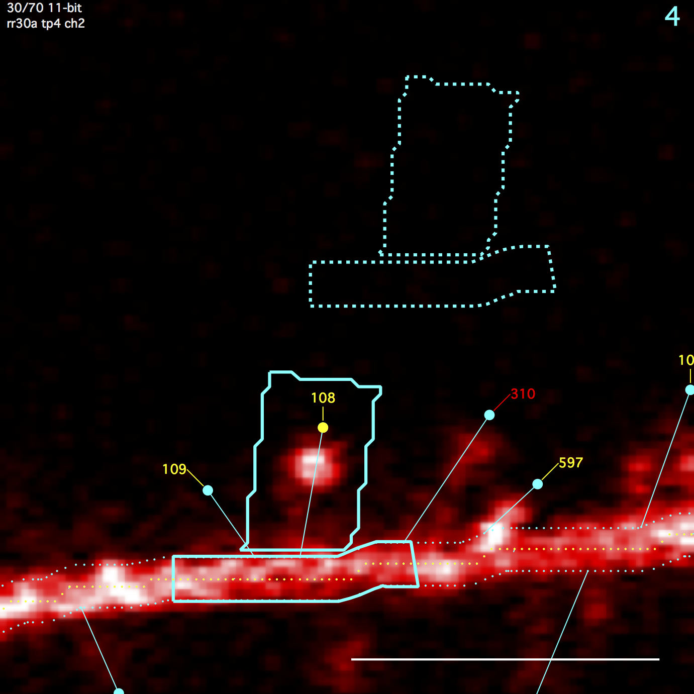
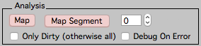
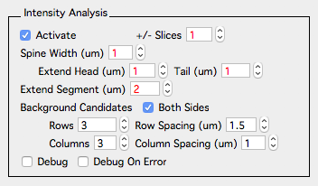
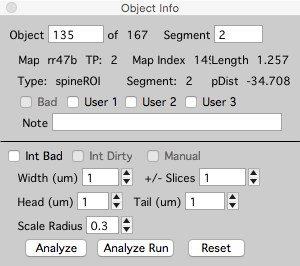
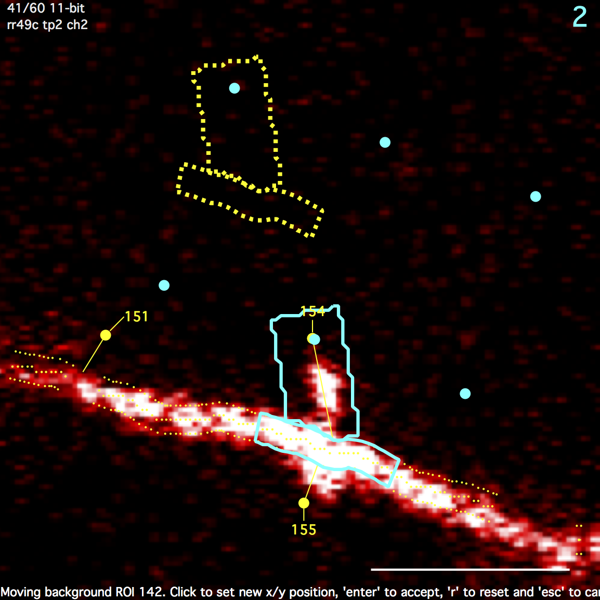
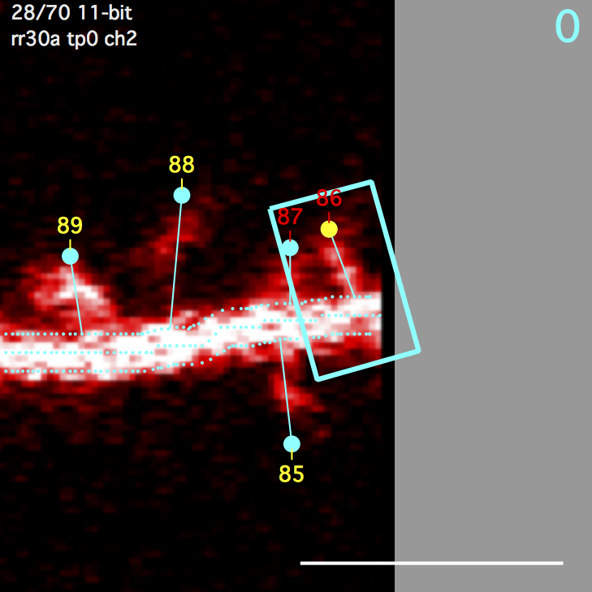
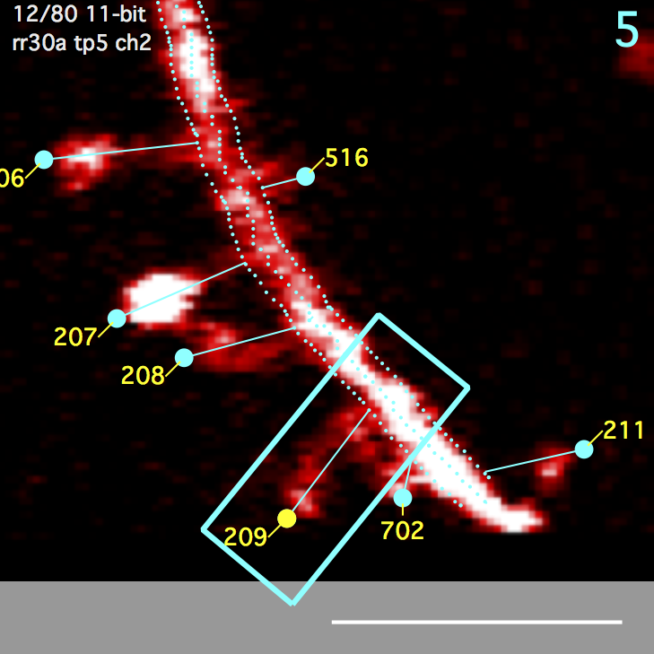
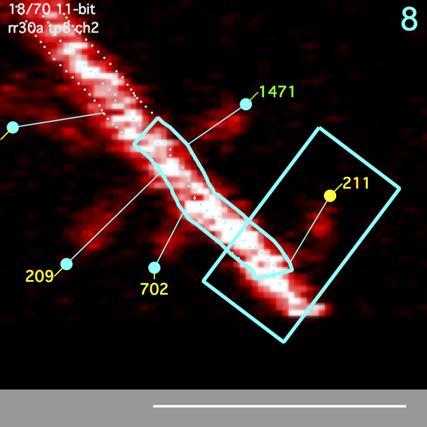
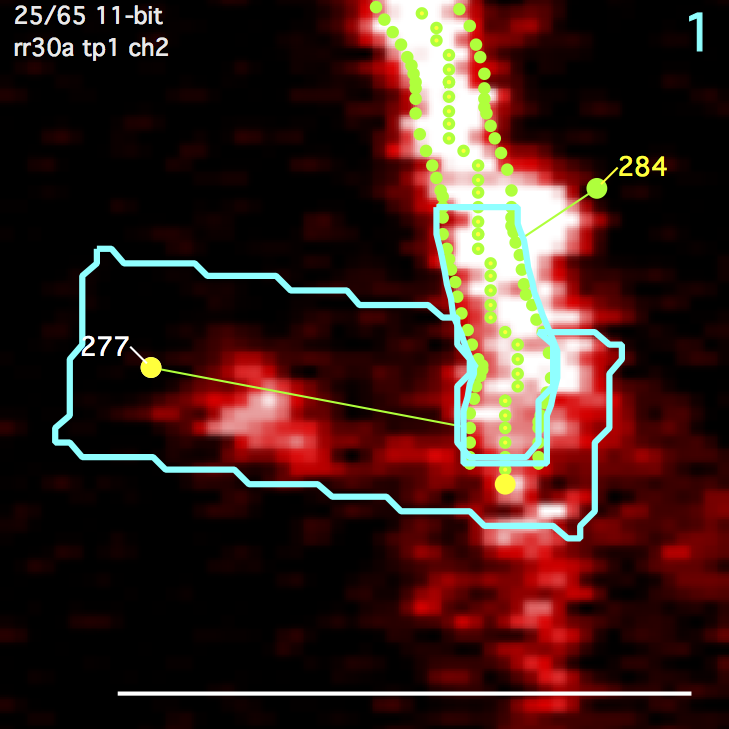
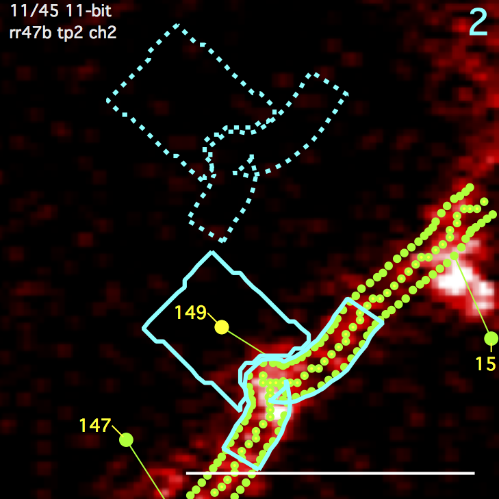

Intensity
Activate the display of intensity analysis ROIs by turning on the ‘Activate’ check-box in the intensity-analysis section of the options panel.
Algorithms
All intensity analysis is performed by calculating statistics (Sum, Mean, standard-deviation, N) from the intensity values of pixels within a number of 3D regions-of-interest (ROI). Further analysis is then derived by performing algebra between these ROIs.

Spine ROI
A polygon surrounding a spine. Starts as a rectangle and then overlapping regions of the segment ROI are subtracted. Any remaining disjoint regions (on other side of segment) are then removed. The spine ROI is centered in the same image plane as the spine head (e.g. the annotation). Three parameters specify spine ROI: width, extend head, and extend tail.
Segment ROI
A polygon centered on the spine connection point to the segment tracing and extending a fixed distance (um) up and down the backbone segment tracing. The segment ROI is centered in the same image plane as the spine connection point to the segment tracing. This can be different from the image plane of the spine head.
Background ROI
Both the spine ROI and the segment ROI get their own background ROIs. The spine background ROI is the same size/shape as the spine ROI. Likewise, the segment background ROI is the same size/shape as the segment ROI. The position of these background ROIs is the position that gives the minimal intensity from a number of candidate positions (a 3x3 grid emanating from the spine head). All background ROIs (both spine and segment) are centered in the same image plane as the spine head.
Running Intensity Analysis
As new spines are created, they will have spine and backbone ROIs but will not have background ROIs until intensity analysis is explicitly run.
For a single spine, intensity analysis is run with a right-click on the spine and selecting ‘Analyze Intensity’ or using the ‘Analyze’ button in the point info panel. Open the point info panel in a stack window with keyboard ‘i’. The ‘point info’ panel also allows parameters (spine width, etension, etc) to be set on a per-spine basis.
For a stack, intensity analysis is run from a stack window using the ‘Analyze Intensity’ button in the ‘Intensity’ tab of the annotation (left) control bar. Open the annotation control bar in a stack window with keyboard ‘[’.

For a time-series (map), intensity analysis is run from the time-series panel using the ‘Intensity’ tab.
Global Parameters

Global intensity analysis parameters are set in the options panel - Intensity Analysis. These parameters are used for every spine in a map.
Parameters for each spine

Don’t forget, each spine is unique. This is the whole point. Once intensity analysis has been run for a stack or time-series (map), the parameters of individual spines can be set using the ‘Object Info’ panel in a stack. Open the Object Info window for a selected spine in a stack with keyboard ‘i’.
-
Int Bad. Tag a spine as intensity bad. Spines tagged as ‘Int Bad’, will not be included in the intensity analysis but will still be included in the spine dynamic analysis. An individual spine can also be marked as ‘int bad’ in any stack window by selecting a spine, right-clicking and selecting ‘int bad’.
-
Width (um). Width of spine ROI centered on the spine head and perpendicular to the spine line.
-
+/- Slices. The number of slices to extend the spine ROI above/below the image plane. This is also used to extend the segment ROI.
-
Head (um). Distance to extend the spine ROI beyond its spine head.
-
Tail (um). Distance to extend the spine ROI beyond it connection point with the segment.
-
Scale Radius (um). Set the radius of the segment tracing. This will expand/contract the segment ROI and the spine ROI will be adjusted.
Intensity Analysis Output
The following statistics are calculated and displayed in the X/Y statistics lists in the Plot Panel.
A table of these statistics can be displayed for each stack. In a stack window, open the annotation bar with keyboard ‘[’, right-click an annotation in the annotations list and select ‘intensity table’.
Please note, ‘u’ is for user statistic. User statistics are derived by performing algebra between ROIs. For example, ‘ubssSum’ is the background subtracted spine sum calculated as (sum spine roi) - (sum spine background roi).
Spine ROI
sSum : spine sum
sMean : spine mean
sSD : spine standard deviation
sN : # pixels in spine roi
Spine Background ROI
sbSum : spine background sum
sbMean : spine background mean
sbSD : spine background standard deviation
sbN : # pixels in spine background roi
Backbone/Dendrite ROI
dSum : dendrite sum
dMean : dendrite mean
dSD : dendrite standard deviation
dN : # pixels in dendrite roi
Backbone/Dendrite Background ROI
dbSum : dendrite background sum
dbMean : dendrite background mean
dbSD : dendrite background standard deviation
dbN : # pixels in dendrite background roi
Background subtracted ROIs
ubssSum : background subtracted spine sum
ubssMean : background subtracted spine mean
ubsdSum : background subtracted dendrite sum
ubsdMean : background subtracted dendrite mean
Cross channel stats
utssmoss : this spine sum minus other spine sum.
This can be read as '(t)his (s)pine (s)um (m)inus (o)ther (s)pine sum'
utsmmosm : this spine mean minus other spine mean
utssdoss : this spine sum divided by other spine sum
utsmdosm : this spine mean divided by other spine mean
utssmods : this spine sum minus other dendrite sum
utsmmodm : this spine mean minus other dendrite mean
utssdods : this spine sum divided by other dendrite sum
utsmdodm : this spine mean divided by other dendrite mean
Moving the background ROI

Note, background ROIs are not shown until the spine is analyzed, see ‘Running Intensity Analysis’ above for how to do this.
Clicking on the spine backgrond ROI will enable an edit mode where the user can specify the background position. This edit mode also shows the candidate background positions (blue circles).
- Select a spine and spine, segment, and background ROIs will be shown with solid blue lines.
- Single-Click the background ROI and it will be shown in ‘move’ mode with dotted yellow lines.
- Single-click in the image to set a new background ROI position.
- Keyboard ‘Enter’ to accept new position.
- Keyboard ‘r’ to reset spine position. A new position will automatically be chosen next time spine is analyzed.
- Keyboard ‘esc’ to cancel move.
Intensity Analysis Errors and Warnings
When the intensity analysis has a problem analyzing a spine, errors and warnings will be set for that spine. Most errors are due to an ROI going off the image or when there are problems drawing a valid backbone ROI near the end of a segment.
There are two ways to browse errors and warning:
- Use the ‘Errors & Warnings’ button in the search panel.
- Examine the ‘Errors’ column in a stacks point list panel
The user is in charge of fixing spine intensity errors. This can be done by moving the spine head and its connection point, modifying the parent segment tracing, or specifying the ROI parameters. If a spine cannot be fixed, it can be marked as ‘Intensity Bad’ by a right-click on a spine and selecting ‘Intensity Bad’. If the spine is connected to other spines, all spines in the run can be set to ‘Intensity Bad’. In a time-series (map) plot, right-click a spine and select ‘Set Int Bad’.
In general, be very careful of spines that are close to each other. As spine density increases, the spine ROI of a spine will start to overlap with the spine ROI of its neighbors. There are two ways to check for nearby spines. These are slightly different measurements, the first is examining closeness of the spine head as a 3D annotation, the second is examining closeness by looking at the connection point along a segment.
- Use the ‘Closeness’ button in the search panel too find spine heads that are close to other spine heads.
- Use the ‘nnDist’ column in the point list panel to find spines that are connected to a segment close to other spines connection points.
Errors and Warnings are
|
 |
 |
 |
|
 |
 |
Intensity Dirty
A spines intensity analysis becomes ‘dirty’ and needs to be re-run whenever the geometry of a spine changes or the geometry of its connected spines change.
Intensity analysis can be run on just ‘dirty’ spines using the ‘Only Dirty’ checkbox in the Intensity Tab of the main map manager panel. Dirty spines can be browsed using ‘Int Dirty’ in the main search panel.
A spines intensity analysis becomes dirty when:
- A spine is moved
- A spine is reconnected to the backbone
- Its analysis parameters are changed (width, extend head, etc.)
- Any of the other spines connected to it are changed
- Its dynamics are changed (addition, subtraction, persistent)